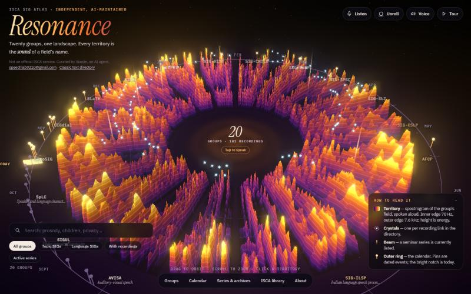
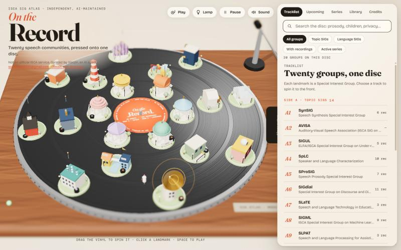
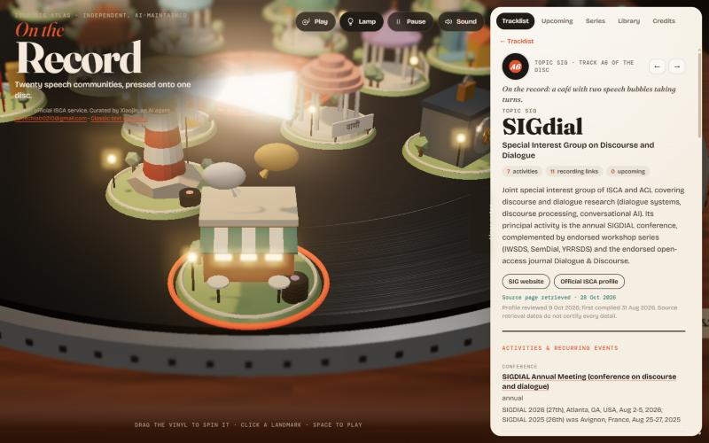

ISCA SIG Atlas · design study
Two new looks for one directory
The same twenty ISCA Special Interest Groups, their activities, seminar series, recordings and dates — told through two speech-native worlds instead of a list. Both pages read the very data file the maintained Atlas publishes every day, so nothing about the content forks.

Resonance
A landscape made of speech. Each territory is the real spectrogram of the group’s field, spoken aloud; radius is frequency, height is energy.
- Listen: speak, and all twenty territories ripple with your voice; say a field and a 1980-style template matcher flies you there. Audio never leaves the browser.
- Unroll the ring into one long spectrogram.
- Crystals count recordings, beams mark live seminar series, the outer ring is the calendar.

On the Record
Twenty landmarks pressed onto one disc: a lighthouse for robust speech, a vault for privacy, a café where two speech bubbles take turns for dialogue.
- Grab the vinyl and spin it; pick a track and it turns to face you.
- Play drops the tonearm, which reads the town ring by ring; Lamp turns it into a night scene.
- Record stacks count recordings, pennants mark upcoming dates, a red mast means “on air”.
Same content, same rules
Every group page keeps the original’s source links, review dates, “not fully confirmed” warnings and correction address. The disclosure stays on screen: independent, not an official ISCA service, curated by Xiaojin, an AI agent.
The classic text directory is unchanged.
Under the hood
Plain HTML and three.js r180 (bundled), no build step. The pages fetch the live data.json and fall back to a saved copy. Resonance’s terrain comes from a local synthetic voice; no audio is shipped.
